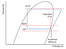
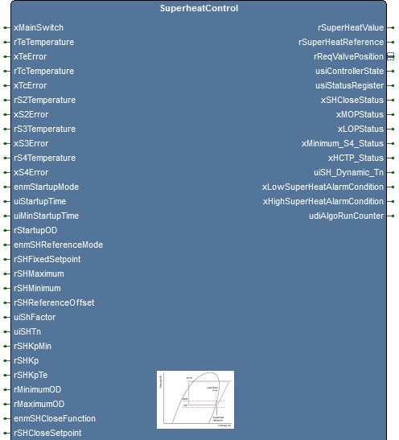
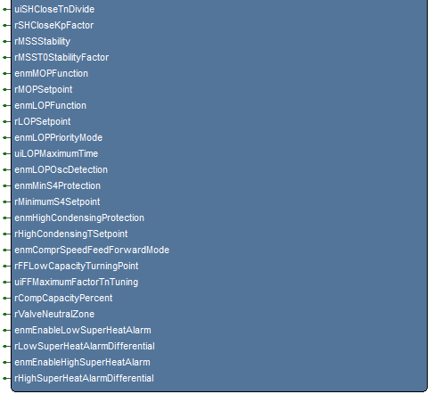
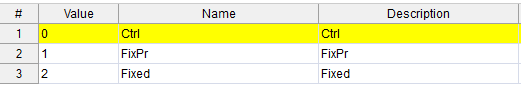
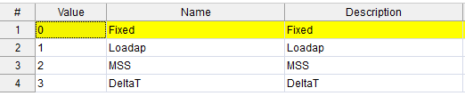

SuperheatControl
Superheat Control
Advanced
FunctionBlock
v1.0.0
FBD Diagram

superheat.png (Icon)

sh_fb_image_top.png

sh_fb_image_bottom.png

enumstartupmode.png

enumshreferencemode.png
Description
The SuperheatControl function block implements the Superheat Control, using the same algorithm that is used in EKE Device.
For more information, refer to the EKE Data Sheet.


How to import the library into a new project.
There are 4 steps:
1. Import the SuperHeatLibrary.plclib library in the Library Tree
2. Import the SuperHeatParameters.xml Parameters Set into Menu tree
3. Add to Enums List in resources Tab the EnumStartupMode and EnumSHreferenceMode,
how in the pictures here below.
4. Recalculate Modbus Addresses of Parameters
EnumStartupMode

EnumSHReferenceMode

Inputs (53)
| Name | Type | Init | Description |
|---|---|---|---|
| xMainSwitch | BOOL | Superheat Algorithm enable: FALSE=OFF, TRUE=ON | |
| rTeTemperature | REAL | T0 Suction pressure converted to saturated temperature. Range -90..120 [°C] | |
| xTeError | BOOL | T0 error: FALSE=OK, TRUE=Error | |
| rTcTemperature | REAL | TC Condensing pressure converted to saturated temperature. Range:-80..120 [°C] | |
| xTcError | BOOL | TC error: FALSE=OK, TRUE=Error | |
| rS2Temperature | REAL | S2 Superheated gas temperature, leaving evaporator. Range:-80..120 [°C] | |
| xS2Error | BOOL | S2 error: FALSE=OK, TRUE=Error | |
| rS3Temperature | REAL | S3 Media temperature, entering heatexchanger. Range: -80..120 [°C] | |
| xS3Error | BOOL | S3 error: FALSE=OK, TRUE=Error | |
| rS4Temperature | REAL | S4 Media temperature, exiting heatexchanger. Range: -80..120 [°C] | |
| xS4Error | BOOL | S4 error | |
| enmStartupMode | EnumStartupMode | (EKE Ref. N102) Startup mode selection: 0= Prop. Control, 1= Fix OD with prot., 2= Fix OD without protection | |
| uiStartupTime | UINT | (EKE Ref. N015) Start up time Range: 1..240 [S] | |
| uiMinStartupTime | UINT | (EKE Ref. N104) Minimum start up time: Range:1..240 [S] | |
| rStartupOD | REAL | (EKE Ref. N017) Start up Opening Degree (Od) in start up time. Range:0..100 [%] | |
| enmSHReferenceMode | EnumSHReferenceMode | (EKE Ref. N021) Superheat reference control mode selection. For chiller application only: 0=Fixed, 1=Load AP, 2=MSS, 3=Delta Temperature | |
| rSHFixedSetpoint | REAL | (EKE Ref. N107) Fixed Superheat reference. Range:2.0..40.0 [K] | |
| rSHMaximum | REAL | (EKE Ref. N009) Maximum superheat reference. Range:2.0..40.0 [K] | |
| rSHMinimum | REAL | (EKE Ref. N010) Minimum superheat reference. Range: 2.0..40.0 [K] | |
| rSHReferenceOffset | REAL | External displacement of SH reference. Range: -100..100 [K] | |
| uiShFactor | UINT | (EKE Ref. N116): Factor used in calculating SH reference. Cascade application only. Range: 20..100 [K] | |
| uiSHTn | UINT | (EKE Ref. N005) Superheat controller Integration time. Range: 20..600 [S] | |
| rSHKpMin | REAL | (EKE Ref. N019) Damping of amplification near reference value: Range: 0.1..1 | |
| rSHKp | REAL | (EKE Ref. N004) Superheat controller Proportional gain. Range: 0.5..20 [%/K] | |
| rSHKpTe | REAL | (EKE Ref. N020) Suction pressure (temperature) feeedback gain. Range: 0..20 [%/K] | |
| rMinimumOD | REAL | (EKE Ref. I066) Minimum opening degree for valve. Range:0..100 [%] | |
| rMaximumOD | REAL | (EKE Ref. N032) Maximum opening degree for valve. Range:0..100 [%] | |
| enmSHCloseFunction | EnumOffOn | (EKE Ref. N117) Enable/Disable SH Close Function. 0=Off, 1=ON | |
| rSHCloseSetpoint | REAL | (EKE Ref. N119) Superheat Close setpoint. Range: -5..10 [K] | |
| uiSHCloseTnDivide | UINT | (EKE Ref. N120) Maximum factor for SH close Tn tuning. Range: 1..5 [S] | |
| rSHCloseKpFactor | REAL | (EKE Ref. N121) Maximum factor for SH close Kp tuning. Range: 0.5..10 [S] | |
| rMSSStability | REAL | (EKE Ref. N018) Stability setting in MSS search. Range:0..10 | |
| rMSST0StabilityFactor | REAL | (EKE Ref. N129) Stability factor in MSS search. Range:0..1 | |
| enmMOPFunction | EnumOffOn | (EKE Ref. N130) Enable/Disable MOP Function. 0=Off, 1=ON | |
| rMOPSetpoint | REAL | (EKE Ref. N011) MOP Setpoint: Range:-50..60 [°C] | |
| enmLOPFunction | EnumOffOn | (EKE Ref. N140) Enable/Disable LOP Function. 0=Off, 1=ON | |
| rLOPSetpoint | REAL | (EKE Ref. N141) LOP Setpoint: Range: -70..50 [C] | |
| enmLOPPriorityMode | EnumOffOn | (EKE Ref. N142) Set priority on SH Close actions. 0=Off, 1=ON | |
| uiLOPMaximumTime | UINT | (EKE Ref. N131) LOP override max time. Range: 0..600 [S] | |
| enmLOPOscDetection | EnumOffOn | (EKE Ref. N132) LOP oscillation detection enable 0=Off, 1=ON | |
| enmMinS4Protection | EnumOffOn | (EKE Ref. N126) Minimum S4 (media outlet) protection function. If S4 goes below setpoint the valve will close to reduce capacity: 0=Off, 1=ON | |
| rMinimumS4Setpoint | REAL | (EKE Ref. N127) Minimum S4 (media outlet) protection setpoint: Range: -50..80 [°C] | |
| enmHighCondensingProtection | EnumOffOn | (EKE Ref. N133) High condensing temperature protection will make sure that the load on the condenser is reduced in case the high condensing temperature is reached. This is done by limiting the valve opening degree: 0=Off, 1=ON | |
| rHighCondensingTSetpoint | REAL | (EKE Ref. N134) High condensing temperature protection setpoint. Range:0..100 [°C] | |
| enmComprSpeedFeedForwardMode | EnumOffOn | (EKE Ref. N135) Compressor speed feedforward mode the definite variation in the valve opening degree:Below this speed superheat control is slower: 0=Off, 1=ON | |
| rFFLowCapacityTurningPoint | REAL | (EKE Ref. N136) Compressor low capacity turning point for Tn tuning. Range:0..100 [%] | |
| uiFFMaximumFactorTnTuning | UINT | (EKE Ref. N137) Maximum factor for Tn tuning. Range:1..5 [S] | |
| rCompCapacityPercent | REAL | Normalized compressor capacity. Range: 0..100 [%] | |
| rValveNeutralZone | REAL | (EKE Ref. I068) In neutral zone, the valve will not move until it overcomes the definite variation in the valve opening degree: Range: 0..50 [%] | |
| enmEnableLowSuperHeatAlarm | EnumOffOn | Enable low superheat alarm: 0=Off, 1=ON | |
| rLowSuperHeatAlarmDifferential | REAL | Low superheat alarm differential: : Range: 0.0..100.0 [K] | |
| enmEnableHighSuperHeatAlarm | EnumOffOn | Enable high superheat alarm: 0=Off, 1=ON | |
| rHighSuperHeatAlarmDifferential | REAL | High superheat alarm differential: Range: 0.0..100.0 [K] |
Outputs (14)
| Name | Type | Description |
|---|---|---|
| rSuperHeatValue | REAL | Actual Superheat [K] |
| rSuperHeatReference | REAL | Superheat reference [K] |
| rReqValvePosition | REAL | Valve opening degree [%] |
| usiControllerState | Enum_INJ316_States | Controller state:0= OFF: valve is closed, 1= STARTUP: valve is starting, 2= RUN: injection control, 3= ERROR: valve is closed, = CUTOUT: valve is closed wating for cutin to start injection |
| usiStatusRegister | Enum_INJ316_Status | Status register/flag: 0= OFF: valve is closed, 1= ACTIVE: superheat control is active, 2= MTR: MTR control is active, 3= MINP0: Min P0 override is active, 4= MOP: MaxP0 /MOP control is active, 5= INPC: Min Pc control is active 6= MAXPC: Max Pc control is active 7= SHCLOSE: AH Close limitation is active 8= S4MIN: S4 Min limitation is active 9= START P CTRL: injection start with proportional control 10= START FIXED: injection start with fixed OD 11= MANUAL: OD is manual control 12= HITC: Hi TC is active 13= NOT USED: Not used |
| xSHCloseStatus | BOOL | Superheat Close Status: FALSE= NOT ACTIVE, TRUE= ACTIVE |
| xMOPStatus | BOOL | Superheat control is working in MOP Status: FALSE= NO, TRUE= YES |
| xLOPStatus | BOOL | Superheat control is working in LOP Status: FALSE= NO, TRUE= YES |
| xMinimum_S4_Status | BOOL | S4 Minimum control: FALSE= NOT ACTIVE, TRUE= ACTIVE |
| xHCTP_Status | BOOL | HCTP control status: FALSE= NOT ACTIVE, TRUE= ACTIVE |
| uiSH_Dynamic_Tn | UINT | SH Dynamic Tn based on compressor capacity |
| xLowSuperHeatAlarmCondition | BOOL | Low SuperHeat Alarm Condition: FALSE= NOT ACTIVE, TRUE= ACTIVE |
| xHighSuperHeatAlarmCondition | BOOL | High SuperHeat Alarm Condition: FALSE= NOT ACTIVE, TRUE= ACTIVE |
| udiAlgoRunCounter | UDINT | Variable for use in debugging |
Local Variables (10)
| Name | Type | Description |
|---|---|---|
| xFirstLoopDone | BOOL | |
| tmsExecutionTimer | TTimerMs | |
| Inj316Instance | S_Inj316_t | |
| fbNeutralZoneFilter | NeutralZoneFilter | |
| xRetVal | BOOL | |
| rLimitLowSHAlarm | REAL | |
| rLimitHighSHAlarm | REAL | |
| uiParLimitCtrl_Tn | UINT | MOP/LOP/MinS4 controller integration time. Range:20..900 [S] |
| rParLimitCtrl_Kp | REAL | MOP/LOP/MinS4 controller Proportional gain. Range:1..20 [%/K] |
| xTmpVal | BOOL |
Source Code (ST)
(********************************
* Initialize the SH *
********************************)
IF xFirstLoopDone = FALSE THEN
(* Call Initialize Function *)
xRetVal := Inj316_Initialise(ADR(Inj316Instance));
(* The sample time is fixed to 1 second *)
Inj316Instance.fl_Par_Tsample := 1.0;
(* Reference filter time *)
Inj316Instance.ui_Par_RefFilter := 300;
(* Superheat controller Tracking time *)
Inj316Instance.uc_Par_Tt := 3;
(* LOP override ramp scaler *)
Inj316Instance.uc_Par_LOPOvrRampScaler := 5;
(* Maximum operating pressure (saturated temperature) *)
Inj316Instance.fl_Par_MaxPC_SetPoint := 30.0;
(* Minimum condensing pressure *)
Inj316Instance.fl_Par_MinPC_SetPoint := -50.0;
(* Application type *)
Inj316Instance.uc_Par_Application := CHILLER_INJ;
Inj316Instance.b_Par_UseEVR := TRUE;
(* Initialize the neutral zone filter *)
fbNeutralZoneFilter(xInit := TRUE);
udiAlgoRunCounter := 0;
xTmpVal := tmsExecutionTimer.Start();
xFirstLoopDone := TRUE;
END_IF;
IF (tmsExecutionTimer.ElapsedMs() >= 1000) THEN
(****************************
* INPUT VALUES *
****************************)
(* Main Switch *)
Inj316Instance.b_In_InjectionEnable := xMainSwitch;
(* T0 (Te) Suction pressure converted to saturated temperature *)
Inj316Instance.fl_In_T0 := LIMIT(rTeTemperature , TO_REAL(-90), TO_REAL(120));
IF (xTeError = TRUE) THEN
Inj316Instance.uc_In_SensorFlag := Inj316Instance.uc_In_SensorFlag OR TO_USINT(_T0_ERROR);
ELSE
Inj316Instance.uc_In_SensorFlag := Inj316Instance.uc_In_SensorFlag AND TO_USINT(NOT(_T0_ERROR));
END_IF;
(* TC Condensing pressure converted to saturated temperature *)
Inj316Instance.fl_In_TC := LIMIT(rTcTemperature, TO_REAL(-80), TO_REAL(120));
IF (xTcError = TRUE) THEN
Inj316Instance.uc_In_SensorFlag := Inj316Instance.uc_In_SensorFlag OR TO_USINT(_TC_ERROR);
ELSE
Inj316Instance.uc_In_SensorFlag := Inj316Instance.uc_In_SensorFlag AND TO_USINT(NOT(_TC_ERROR));
END_IF;
(* S2 Superheated gas temperature, leaving evaporator *)
Inj316Instance.fl_In_S2 := LIMIT(rS2Temperature, TO_REAL(-80), TO_REAL(120));
IF (xS2Error = TRUE) THEN
Inj316Instance.uc_In_SensorFlag := Inj316Instance.uc_In_SensorFlag OR TO_USINT(_S2_ERROR);
ELSE
Inj316Instance.uc_In_SensorFlag := Inj316Instance.uc_In_SensorFlag AND TO_USINT(NOT(_S2_ERROR));
END_IF;
(* S3 Media temperature, entering heatexchanger *)
Inj316Instance.fl_In_S3 := LIMIT(rS3Temperature, TO_REAL(-80), TO_REAL(120));
IF (xS3Error = TRUE) THEN
Inj316Instance.uc_In_SensorFlag := Inj316Instance.uc_In_SensorFlag OR TO_USINT(_S3_ERROR);
ELSE
Inj316Instance.uc_In_SensorFlag := Inj316Instance.uc_In_SensorFlag AND TO_USINT(NOT(_S3_ERROR));
END_IF;
(* S4 Media temperature, exiting heatexchanger *)
Inj316Instance.fl_In_S4 := LIMIT(rS4Temperature, TO_REAL(-80), TO_REAL(120));
IF (xS4Error = TRUE) THEN
Inj316Instance.uc_In_SensorFlag := Inj316Instance.uc_In_SensorFlag OR TO_USINT(_S4_ERROR);
ELSE
Inj316Instance.uc_In_SensorFlag := Inj316Instance.uc_In_SensorFlag AND TO_USINT(NOT(_S4_ERROR));
END_IF;
(* Start UP Function *)
Inj316Instance.uc_Par_Startup_Mode := TO_USINT(LIMIT(enmStartupMode, 0, 2));
Inj316Instance.ui_Par_StartUpTime := LIMIT(uiStartupTime, 1, 240);
Inj316Instance.ui_Par_Min_StartUpTime := LIMIT(uiMinStartupTime, 1, 240);
Inj316Instance.fl_Par_StartUpOd := LIMIT(rStartupOD, TO_REAL(0), TO_REAL(100));
(* SH Reference Regulation *)
Inj316Instance.uc_Par_ShRef_Mode := TO_USINT(LIMIT(enmSHReferenceMode, 0, 3));
Inj316Instance.fl_Par_ShRefFixed := LIMIT(rSHFixedSetpoint, TO_REAL(2), TO_REAL(40));
Inj316Instance.fl_Par_ShMax := LIMIT(rSHMaximum, TO_REAL(2), TO_REAL(40));
Inj316Instance.fl_Par_ShMin := LIMIT(rSHMinimum, TO_REAL(2), TO_REAL(40));
Inj316Instance.fl_Par_ExtShRefDiff := LIMIT(rSHReferenceOffset, TO_REAL(-100), TO_REAL(100));
Inj316Instance.uc_Par_ShFactor := TO_USINT(LIMIT(uiShFactor, 20, 100));
Inj316Instance.ui_Par_ShCtrl_Tn := TO_UINT(LIMIT(uiSHTn, 20, 600));
Inj316Instance.fl_Par_ShCtrl_KpMin := LIMIT(rSHKpMin, TO_REAL(0.1), TO_REAL(1));
Inj316Instance.fl_Par_ShCtrl_Kp := LIMIT(rSHKp, TO_REAL(0.5), TO_REAL(20));
Inj316Instance.fl_Par_ShCtrl_KpT0 := LIMIT(rSHKpTe, TO_REAL(0), TO_REAL(20));
(* Set limits. internal var, not parameters *)
uiParLimitCtrl_Tn := 45;
Inj316Instance.ui_Par_LimitCtrl_Tn := TO_UINT(LIMIT(uiParLimitCtrl_Tn, 20, 900));
rParLimitCtrl_Kp := 5.0;
Inj316Instance.fl_Par_LimitCtrl_Kp := TO_REAL(LIMIT(rParLimitCtrl_Kp, TO_REAL(1), TO_REAL(20)));
(* Set Min/Max OD *)
Inj316Instance.fl_Par_MinOd := LIMIT(rMinimumOD, TO_REAL(0), TO_REAL(100));
Inj316Instance.fl_Par_MaxOd := LIMIT(rMaximumOD, TO_REAL(0), TO_REAL(100));
(* SH Close Function *)
Inj316Instance.b_Par_ShCloseMode := TO_BOOL(enmSHCloseFunction);
Inj316Instance.fl_Par_ShClose_SetPoint := LIMIT(rSHCloseSetpoint, TO_REAL(-5), TO_REAL(10));
Inj316Instance.ui_Par_SHCloseTnDivide := TO_UINT(LIMIT(uiSHCloseTnDivide, 1, 5));
Inj316Instance.fl_Par_SHCloseKpFactor := LIMIT(rSHCloseKpFactor, TO_REAL(0.5), TO_REAL(10));
Inj316Instance.fl_Par_SHCloseRampSlope := 0.02; //TO DO CLARIFY
(* Stability *)
Inj316Instance.fl_Par_Stability := LIMIT(rMSSStability, TO_REAL(0), TO_REAL(10));
Inj316Instance.fl_Par_T0VariansFactor := LIMIT(rMSST0StabilityFactor, TO_REAL(0), TO_REAL(1));
(* MOP Function *)
Inj316Instance.b_Par_MOP_Mode := TO_BOOL(enmMOPFunction);
Inj316Instance.fl_Par_MOP_SetPoint := LIMIT(rMOPSetpoint, TO_REAL(-50), TO_REAL(60));
(* LOP Function *)
Inj316Instance.b_Par_LOP_Mode := TO_BOOL(enmLOPFunction);
Inj316Instance.fl_Par_LOP_SetPoint := LIMIT(rLOPSetpoint, TO_REAL(-70), TO_REAL(50));
Inj316Instance.b_Par_LOPPriority_mode := TO_BOOL(enmLOPPriorityMode);
Inj316Instance.ui_Par_LOPMaxTime := TO_UINT(LIMIT(uiLOPMaximumTime, 0, 600));
IF (TO_BOOL(enmLOPOscDetection) = TRUE) THEN
Inj316Instance.ui_Par_LOPOscWindow := TO_UINT(LIMIT(LOP_OSC_WINDOW, 0, 1800));
ELSE
Inj316Instance.ui_Par_LOPOscWindow := TO_UINT(0);
END_IF;
(* To check if add a parameter *)
Inj316Instance.b_In_CutIn := TRUE;
Inj316Instance.b_In_Ext_Override := FALSE;
Inj316Instance.fl_In_Ext_Override_Od := TO_REAL(LIMIT(TO_REAL(0), TO_REAL(0), TO_REAL(100)));
(* Minimum S4 Function *)
IF ((TO_BOOL(enmMinS4Protection) = TRUE) AND (xS4Error = FALSE)) THEN
Inj316Instance.b_Par_MinS4_Mode := TRUE;
ELSE
Inj316Instance.b_Par_MinS4_Mode := FALSE;
END_IF;
Inj316Instance.fl_Par_MinS4_SetPoint := LIMIT(rMinimumS4Setpoint, TO_REAL(-50), TO_REAL(80));
(* HCTP Function *)
Inj316Instance.b_Par_HiCondTempProtectMode := TO_BOOL(enmHighCondensingProtection);
Inj316Instance.fl_Par_HiCondTempProtect_SetPoint := LIMIT(rHighCondensingTSetpoint, TO_REAL(0), TO_REAL(100));
(* Compressor Capacity *)
Inj316Instance.b_Par_CompCapFF_Mode := TO_BOOL(enmComprSpeedFeedForwardMode);
Inj316Instance.fl_Par_CompLoCapPoint := LIMIT(rFFLowCapacityTurningPoint, TO_REAL(0), TO_REAL(100));
Inj316Instance.ui_Par_ShTnFactor := TO_UINT(LIMIT(uiFFMaximumFactorTnTuning, 1, 5));
Inj316Instance.fl_In_CompCapacity := LIMIT(rCompCapacityPercent, TO_REAL(0), TO_REAL(100));
(****************************
* ALGORITHM RUNS *
****************************)
xRetVal := Inj316_Ctrl(ADR(Inj316Instance));
udiAlgoRunCounter := udiAlgoRunCounter + 1;
(****************************
* Output values *
****************************)
usiControllerState := Inj316Instance.uc_Vis_eState;
usiStatusRegister := Inj316Instance.uc_Vis_StatusRegister;
rSuperHeatValue := Inj316Instance.fl_Vis_Sh;
rSuperHeatReference := Inj316Instance.fl_Vis_ShRef;
rReqValvePosition := Inj316Instance.fl_Out_Od;
(* Valve Neutral zone: calculation based on integer for "round up" the percentage *)
fbNeutralZoneFilter.uiBand := TO_UINT((rValveNeutralZone * 10));
fbNeutralZoneFilter.uiMin := TO_UINT((rMinimumOD * 10));
fbNeutralZoneFilter.uiMax := TO_UINT((rMaximumOD * 10));
fbNeutralZoneFilter.uiInRequestPower := TO_UINT(rReqValvePosition * 10);
fbNeutralZoneFilter();
rReqValvePosition := (TO_REAL(fbNeutralZoneFilter.uiOutRequestPower)) / 10;
fbNeutralZoneFilter.xInit := FALSE;
(* SH Close Status *)
IF (Inj316Instance.uc_Vis_StatusRegister = Enum_INJ316_Status#INJ316_SHCLOSE) THEN
xSHCloseStatus := TRUE;
(*
fbNeutralZoneFilter.xInit := TRUE; //error importing the library
*)
ELSE
xSHCloseStatus := FALSE;
END_IF;
(* LOP Status *)
IF (Inj316Instance.uc_Vis_StatusRegister = Enum_INJ316_Status#INJ316_MINP0) THEN
xLOPStatus := TRUE; (* LOP control is active *)
ELSE
xLOPStatus := FALSE;
END_IF;
(* MOP Status *)
IF (Inj316Instance.uc_Vis_StatusRegister = Enum_INJ316_Status#INJ316_MOP) THEN
xMOPStatus := TRUE; (* MOP control is active *)
ELSE
xMOPStatus := FALSE;
END_IF;
(* S4 Minimum Status *)
IF (Inj316Instance.uc_Vis_StatusRegister = Enum_INJ316_Status#INJ316_S4MIN) THEN
xMinimum_S4_Status := TRUE; (* S4 Minimum control is active *)
ELSE
xMinimum_S4_Status := FALSE;
END_IF;
(* HCTP High Condensing Temperature Protection Status *)
IF (Inj316Instance.uc_Vis_StatusRegister = Enum_INJ316_Status#INJ316_HITC) THEN
xHCTP_Status := TRUE;
ELSE
xHCTP_Status := FALSE;
END_IF;
(* SH Dynamic Tn based on compressor capacity *)
uiSH_Dynamic_Tn := Inj316Instance.Prv.ui_DynTn;
(* Low SH Alarm Condition *)
IF (TO_BOOL(enmEnableLowSuperHeatAlarm) = TRUE) THEN
rLimitLowSHAlarm := Inj316Instance.fl_Par_ShMin - rLowSuperHeatAlarmDifferential;
IF (rLimitLowSHAlarm < Inj316Instance.fl_Par_ShClose_SetPoint) THEN
rLimitLowSHAlarm := Inj316Instance.fl_Par_ShClose_SetPoint;
END_IF;
IF (rLimitLowSHAlarm < TO_REAL(2.0)) THEN
rLimitLowSHAlarm := TO_REAL(2.0);
END_IF;
IF ((Inj316Instance.b_Par_ShCloseMode = FALSE)
OR (Inj316_Is_Controller_Off(ADR(Inj316Instance)))
OR (Inj316Instance.fl_Vis_Sh > rLimitLowSHAlarm))
THEN
xLowSuperHeatAlarmCondition := FALSE;
ELSE
xLowSuperHeatAlarmCondition := TRUE;
END_IF;
ELSE
xLowSuperHeatAlarmCondition := FALSE;
END_IF;
(* High SH Alarm Condition *)
IF (TO_BOOL(enmEnableHighSuperHeatAlarm) = TRUE) THEN
rLimitHighSHAlarm := Inj316Instance.fl_Par_ShMax + rHighSuperHeatAlarmDifferential;
IF ((Inj316_Is_Controller_Off_MOP(ADR(Inj316Instance)))
OR (Inj316Instance.fl_Vis_Sh < rLimitHighSHAlarm))
THEN
xHighSuperHeatAlarmCondition := TRUE;
ELSE
xHighSuperHeatAlarmCondition := FALSE;
END_IF;
ELSE
xHighSuperHeatAlarmCondition := FALSE;
END_IF;
(****************************
* Restart Timer *
****************************)
xTmpVal := tmsExecutionTimer.Start();
END_IF;